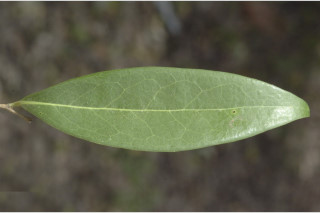
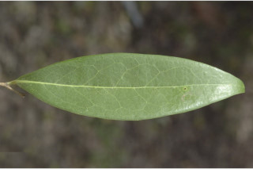
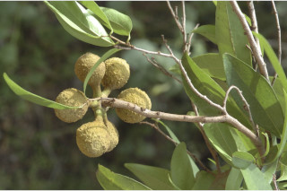
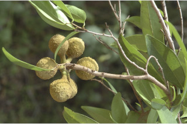

| Habit : | Small trees , up to 6 m tall. |
| Leaves : | Leaves simple , alternate , distichous ; petiole 0.5-0.7 cm long, glabrous , minutely pubescent ; lamina 5-8 x 1.8-3 cm; lanceolate , apex obtuse , base acute to attenuate , chartaceous , glabrous ; midrib flat above; secondary_nerves ca.10 pairs; tertiary_nerves coarsely reticulate . |
| Inflorescence / Flower : | Flower fascicled on very short axillary peduncle , solitary , pedicels 0.5-0.6 cm, pubescent . |
| Fruit and Seed : | Aggregated berries , up to 6, subglobose , tomentose , tuberculate , more than 2-seeded , biseriate . |


 


 
